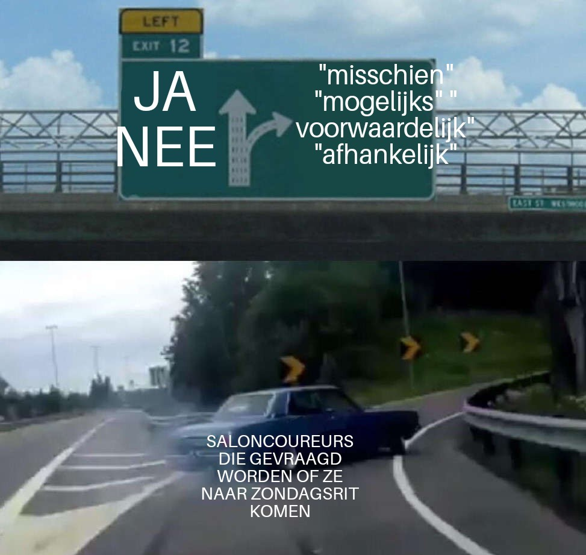

De Saloncoureurs
Site
De maand juni stond volledig in het teken van de hittegolf. En een Saloncoureur zou geen Saloncoureur zijn als dat niet het beste in hem (of haar?) naar boven bracht. Bijna iedereen stofte deze maand zijn fiets af en maakte er voorlopig de stevigste maand van het jaar van. Velen klokten hun snelste rit van het jaar of reden de ene PR na de andere aan diggelen. Dit stemt het bestuur uiteraard zeer tevreden, en we kijken dan ook reikhalzend uit naar een mooie zomer én een buitenlandse stage.
We zijn ondertussen halverwege het seizoen en wat de hoofddoelstelling betreft, zitten we mooi op schema. Toch maken we de kanttekening dat er de komende twee à drie maanden best wat extra gefietst mag worden, zodat we in oktober en november geen kilometers in de gietende regen hoeven in te halen.
Het goede weer is bovendien hét moment om voetbalstadions te bezoeken, een rondpunt onveilig te maken en meters te maken op café. Dus c'mon Saloncoureurs: laat de komende drie maanden geen uitstelgedrag zien en geniet van het moment! Of om het met de gevleugelde woorden van Luc Persyn te zeggen: Mea Culpa!
Vanaf nu dienen de zondagsritten vóór het weekend aangekondigd te worden via een poll. Elke Saloncoureur geeft daarin duidelijk aan of hij al dan niet aanwezig zal zijn, zodat voor iedereen vooraf duidelijk is wie er aan de start verschijnt. Reageren wordt ten zeerste geapprecieerd (en voorlopig nog niet bestraft — tenzij dat in de toekomst helaas nodig blijkt).

"Mea Culpa!"
- Luc Persyn